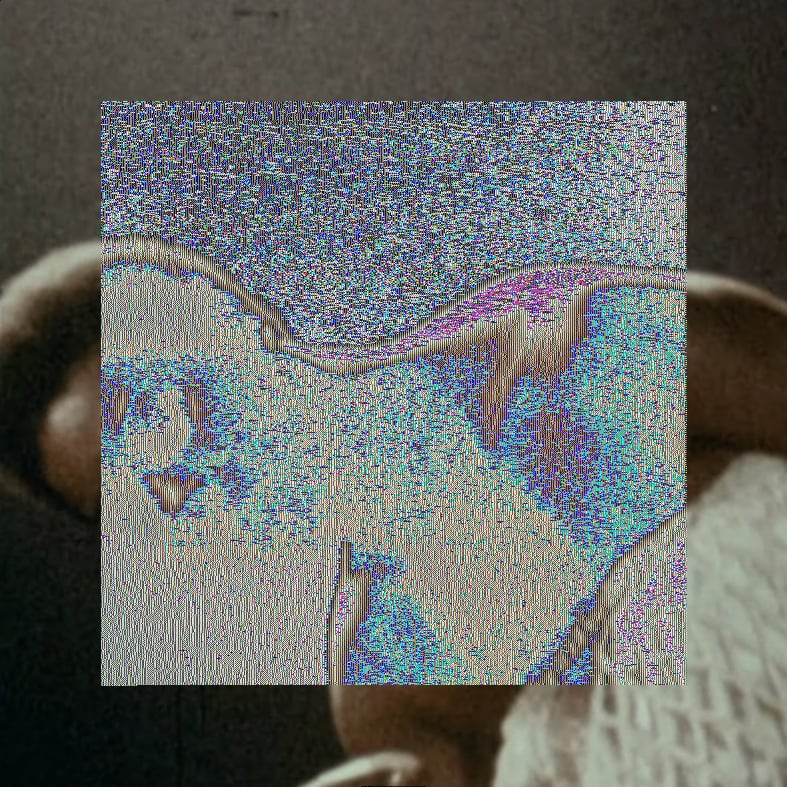
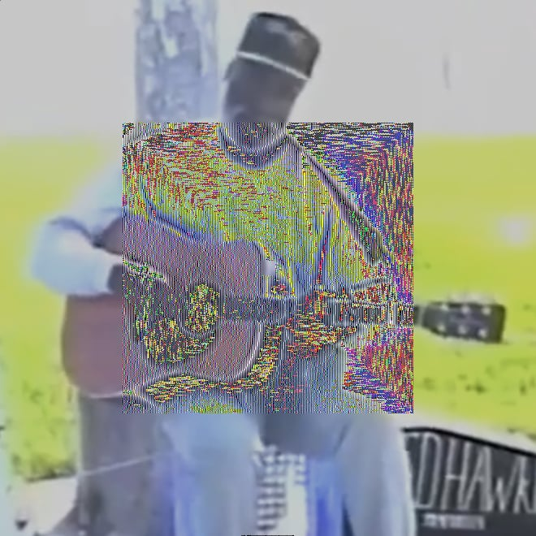
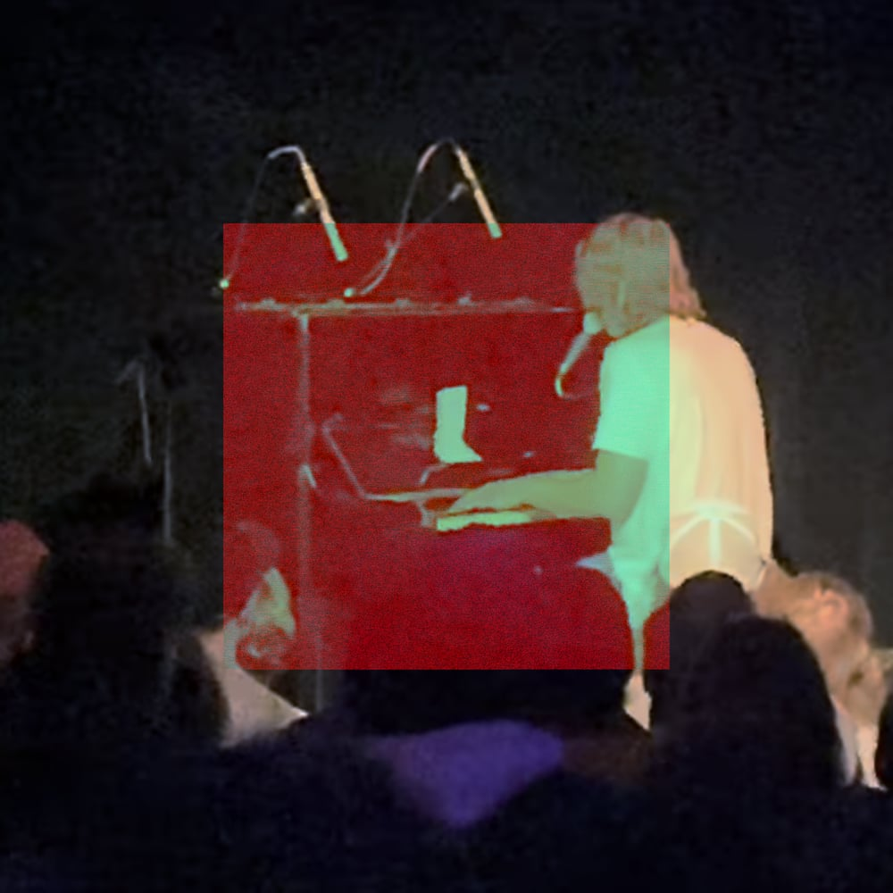
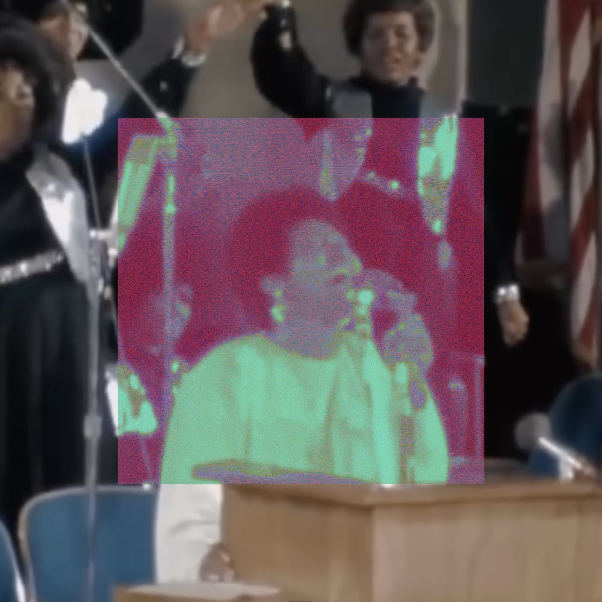
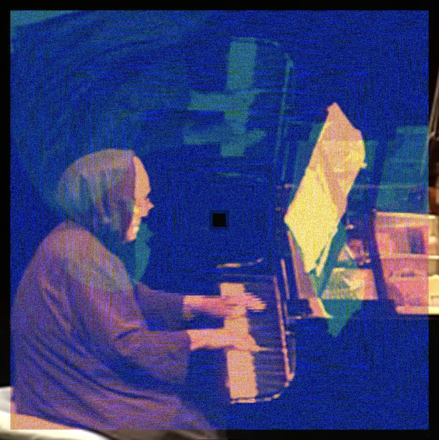

live
an homage to performances that have made me feel alive.
these images are screenshots of videos, with sound encoded into their pixels. there are no audio files here. select an image and listen to it loop.
tools provided by another machine.

- Nina Simone - I Wish I Knew How It Would Feel to Be Free (The Village Gate, New York City, 1968)
- Mdou Moctar - Maheyega Assouf Igan (Tchin-Tabaraden, Niger, 2012)
- Anohni - If It Be Your Will (Sydney Opera House, 2005)
- J Dilla - F*ck the Police (Jazz Cafe, London, May 1, 2004)
-

Ted Hawkins - Just One Look (Venice Beach Boardwalk, 1990) - R.L. Burnside - Wood-Chopping Holler (Independence, Mississippi, 1978)
- The Staple Singers - Sit Down Servant (television broadcast, 1960s)
- Janie Hunter and the Moving Star Hall Singers - Jonah (Moving Star Hall, Johns Island, SC, 1983)
-

Cameron Winter - Love Takes Miles / Drinking Age (Sleeping Village, Chicago, January 18, 2025) - Sufjan Stevens - Seven Swans (Pitchfork Music Festival, Chicago, July 16, 2016)
-

Aretha Franklin - Amazing Grace (New Temple Missionary Baptist Church, Los Angeles, 1972) - Paul Robeson - Ol' Man River (Warsaw, 1949)
- Pete Seeger - Which Side Are You On? (Sweden, 1968)
-

Emahoy Tsege Mariam Gebru - Tezeta (Washington DC Jewish Community Center, 2008) - Jason Molina - Hold On Magnolia (Acme Comics & Records, Columbia, SC, 2006)
- Burning Spear - Jah No Dead (Jamaica, 1978)